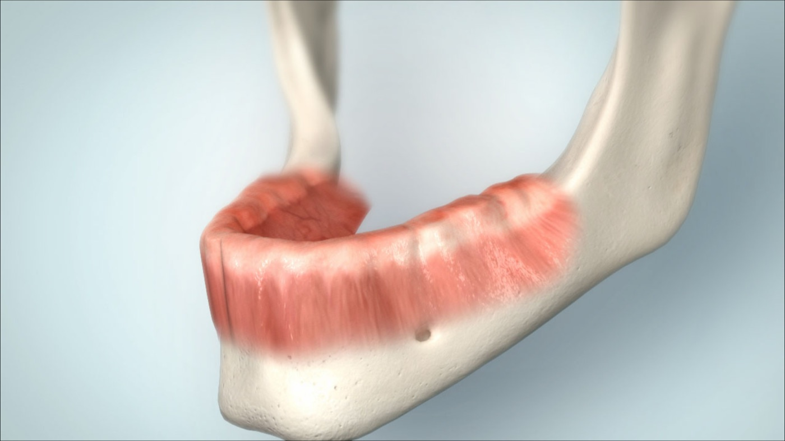
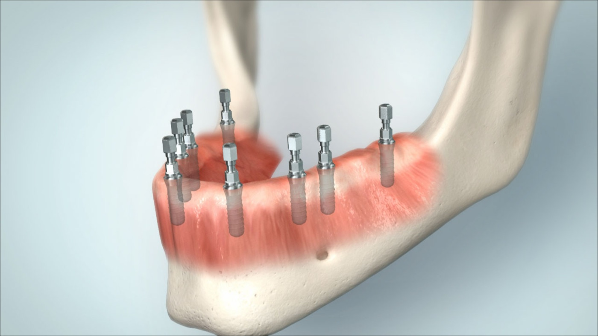
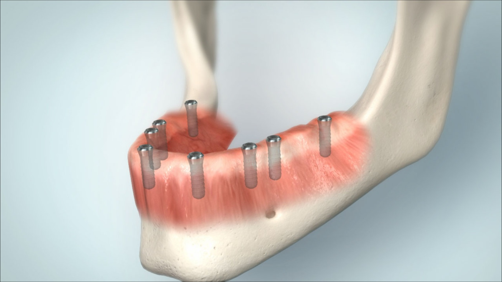
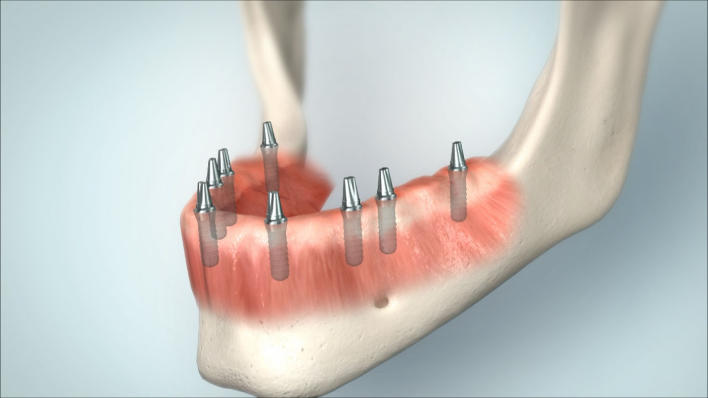
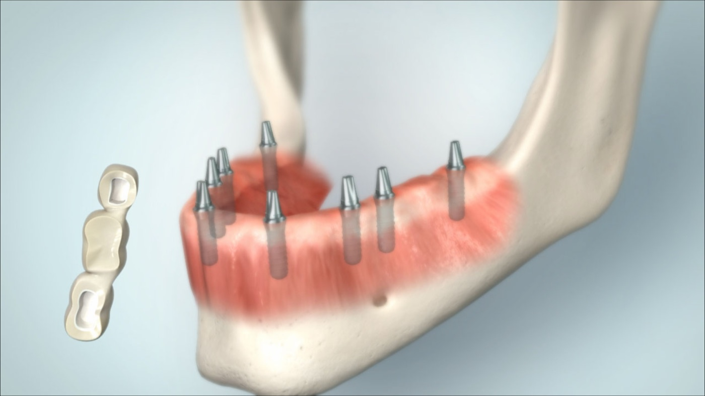
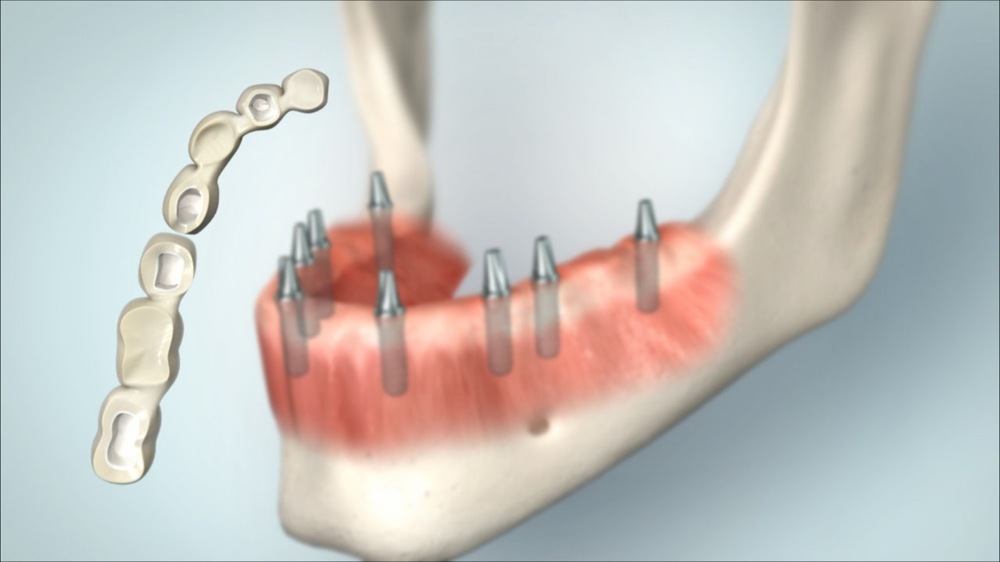
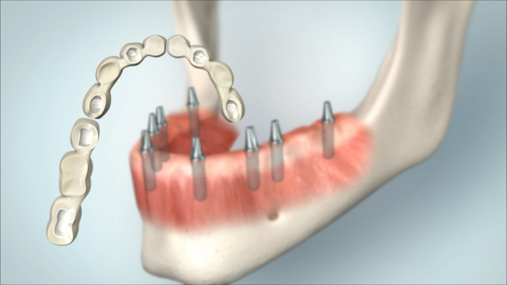
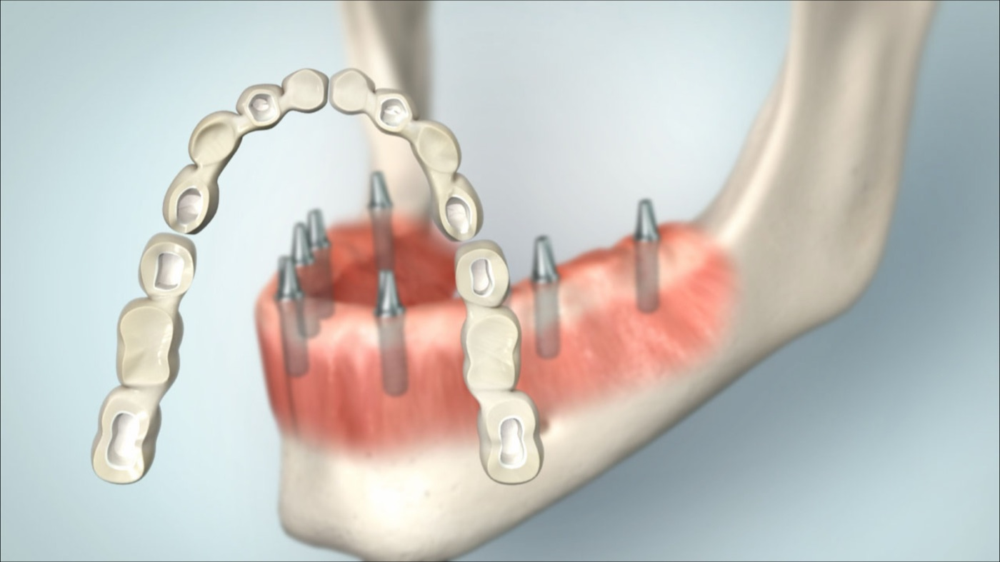
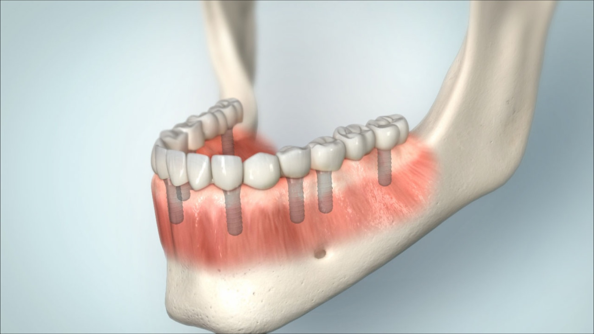
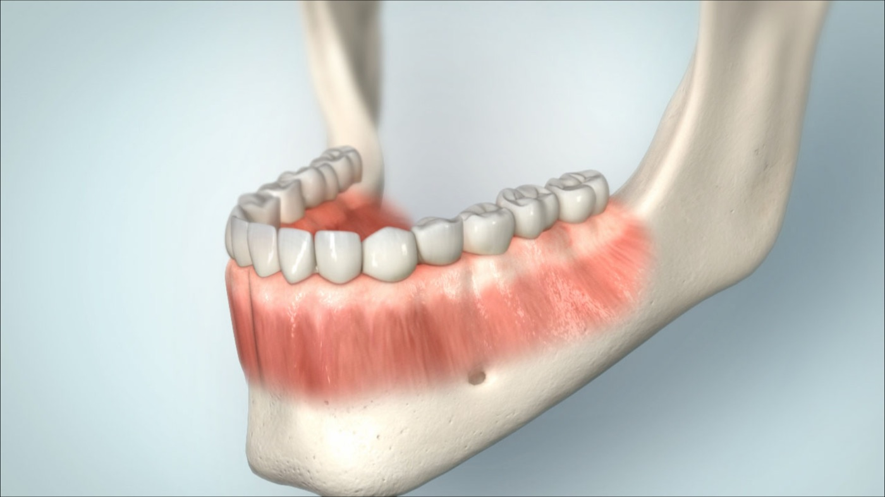

MKG im Carree
Beispielbilder · zahnloser Unterkiefer
8 Implantate · festsitzend
Beispielhafte digitale Darstellung einer festsitzenden Unterkiefer-Versorgung auf 8 Implantaten. Eine festsitzende Versorgung erfordert eine andere Implantatverteilung als eine herausnehmbare Prothese, eine sehr genaue prothetische Planung und ausreichend gute Reinigbarkeit. Ob dieses Konzept sinnvoll ist, wird individuell anhand von Knochenform, Nervverlauf, Bisssituation, Pflegefähigkeit und Kostenrahmen geplant.









